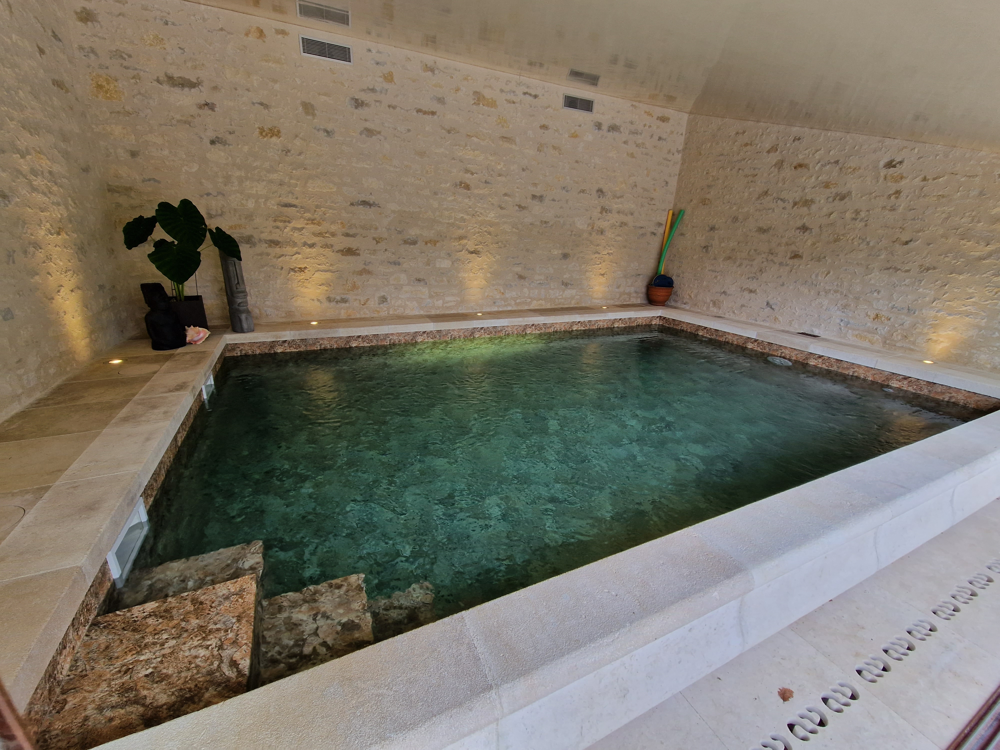
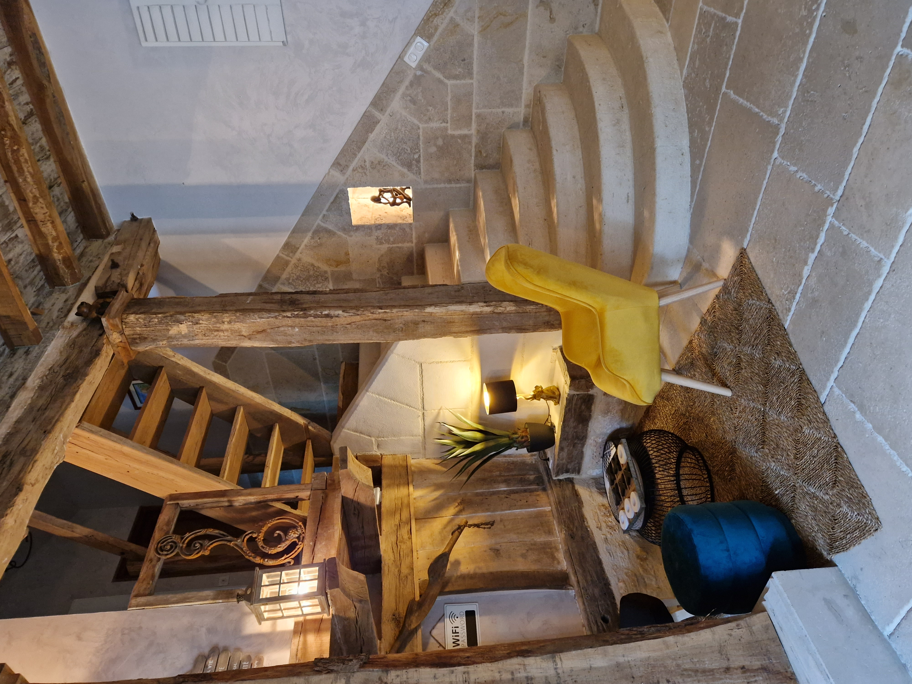
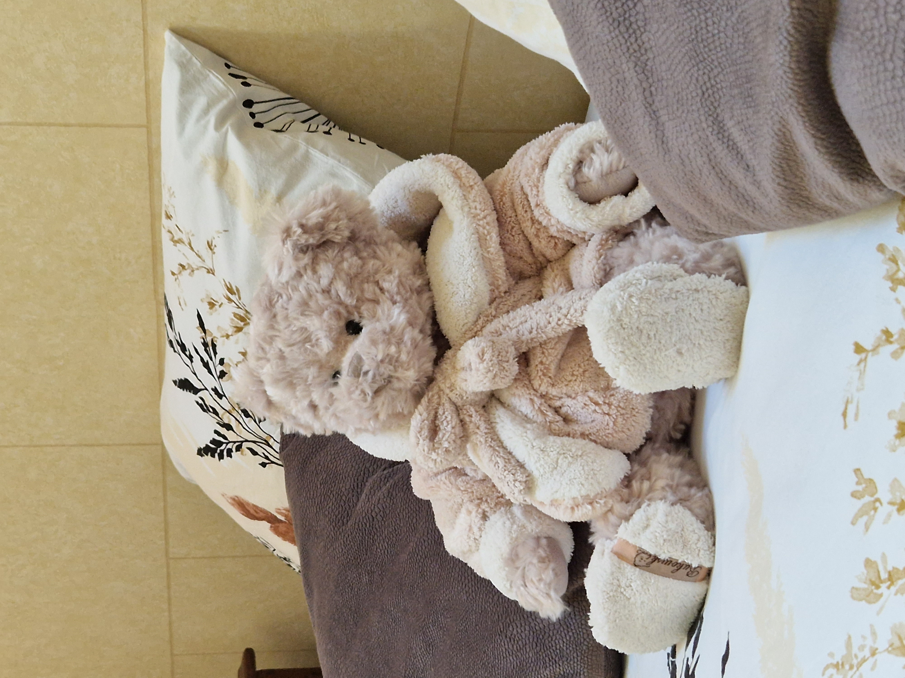

<div class="container-text-intro" id="texte-intro">
  <div class="texte-intro" [ngClass]="{'row' : !telephonePortable}">
    <h2 data-aos="fade-up" data-aos-anchor-placement="top-bottom">Le clos d'Adam</h2>
    <h3 data-aos="fade-up" data-aos-anchor-placement="bottom-bottom" data-aos-delay="200"
    >reposant et inoubliable</h3>
    <div class="container-intro"  [ngClass]="{'flex-col' : telephonePortable, 'flex-row': !telephonePortable}">
      <div class="container-text">
        <p>
          Notre domaine de caractère situé dans le charmant village de Cubjac en Périgord Blanc est idéal pour découvrir ou redécouvrir la Dordogne. Situé à 17 km de Périgueux, 55 km de Sarlat et 70 km de Bergerac, Les trésors de la Dordogne n’attendent que vous.</p>
          <p [hidden]="telephonePortable">
            Dès le portail passé, le charme opère… Bienvenue au Clos d'Adam. Entre l’authenticité des bâtisses en pierres de Limeyrat et notre forêt typique de chênes verts, plongez au cœur du patrimoine Périgourdin.
          </p>
          <p>
          Le Clos d’Adam vous offre la possibilité de passer un inoubliable séjour dans son gîte de charme pouvant accueillir jusqu’à 6 personnes.  Entouré de notre bois, de l’Auvézère et des chemins de randonnée, Le Clos d’Adam offre de nombreuses possibilités d’activités sportives…  Et de détente grâce à sa piscine chauffée, sa terrasse baignée de soleil et sa cuisine d'été.
        </p>
        <p>
        <b>
          N’attendez plus, c’est ici que vos vacances commencent !
        </b>
        </p>
      </div>
      <div class="container-images">
          
          
          
      </div>
    </div>
  </div>
</div>

